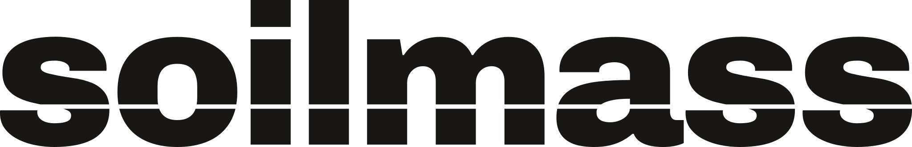

00 / Overview
Solid ground
for the web.
soilmass is a web agency. The name is a geotechnical term: the body of earth an engineer tests before anything is built on it. That is the promise of the brand — websites that stand on measured, solid ground.
The visual language is Swiss International Typographic Style — strict grid, large confident type, generous whitespace — detailed with geotechnical motifs: grade lines, hatching, strata, dimension annotations. The visuals carry the rigor; the words carry the warmth. Keep both; the brand breaks if either side wins.
01 / Logo
The grade-gap wordmark
Lowercase soilmass, Archivo 900, letter-spacing −0.03em. A horizontal grade line of background color cuts the letters at 81.5–85.6% of the wordmark height; below it, the mass sits in earth ochre. You read words from the tops of letters, so the intact upper letterforms keep the mark instantly legible — the ochre band is the story, not the information.

Variants & size rules
| Context | Use |
|---|---|
| ≥ 26 px tall | Two-tone grade-gap wordmark |
| < 26 px tall | solid fallback — wordmark-small.svg |
| Favicon / avatar | ink tile, grade-gap “s”, gap optically enlarged to ~7% |
| Single color |  one color, gap retained — logo-mono.svg |
Rules
Clear space: ½ wordmark height on all sides. Never recolor, rotate, stretch, add effects, or place the two-tone mark on busy backgrounds. The ochre band is exempt from text contrast rules (WCAG 1.4.3, logotypes).
02 / Color
Warm stone, one ochre
Neutrals
#FAF9F6
#F0EEE8
#E8E5DE
#D8D4CC
#A8A29A
#78736A
#59544B
#191714
Ochre
#F7EBD3
#C98A12
#8F620B
Rules
Ochre is punctuation, never flood — one ochre moment per
composition. Body text on paper is ink or stone-600 only. Ochre text on
paper always uses ochre-600 (ochre-500 on paper is 2.80:1 — fails AA at any
size); ochre-500 type is reserved for dark backgrounds (6.07:1). Text on
ochre-500 fills is always ink, never paper. Every documented pair is
enforced by tools/check_contrast.py.
✓ Button
Start a project✓ Ochre type on dark
6.07:1